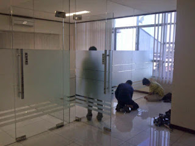
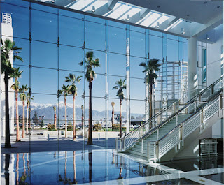

Semakin berkembangnya dunia pembangunan, maka hadir banyak material penambah yang melengkapi keindahan sebuah banguanan. Tetapi, tak hanya estetika tapi juga keamanan bagi penghuni di dalamnya. Tak halnya hadir berbagai material kaca dan juga lantai yang kian melengkapi nilai estetika sebuah bangunan. Berikut sedikit penjelasan yang bisa anda baca mengenai sebagai referensi and ajika akan membangun rumah ataupun daerah usaha.
Tidak hanya kaca, kini juga sudah hadir material penunjang bagi bangunan yang sedang banyak di bangun merupakan material parket lantai kayu jati. Tak cuma material kaca sekarang juga terdapat material kayu atau parket lantai kayu jati. Berikut ini sedikit ulasan mengenai kaca bagi sebuah banguanan, fungsi utama dan bagaiman memilih kaca yang pantas untuk sebuah hunian bagus rumah, kantor maupun gedung. Akan di jelaskan juga mengenai lantai kayu jati terbaik yang dapat anda beli.
Jual Kaca Cermin di Gorontalo

Kaca cermin dilapisi dengan pelapis transparan tipis dan oksida logam sebagai lapisan pelapis. Kini, cermin tak cuma berbentuk persegi saja. Banyak produsen kaca cermin Gorontalo yang membuat dengan desain yang berbeda. Sementara itu, dikala dipandang dari luar, kaca ini reflektif. Cermin minimalis mempunyai siku. Jikalau itu, kadang-kadang cerminnya tak ada bingkainya atau yang kerap kali disebut dengan kaca cermin Gorontalo frameless.
Dan bahan yang diaplikasikan untuk membuat bingkai pun berbeda-beda. Banyak orang yang lebih menyenangi dengan desain kaca cermin Gorontalo minimalis. Karenanya cuma persegi atau persegi panjang. Atau Anda dapat buat pintu kaca cermin Gorontalo. Atau kaca cermin Gorontalo ini juga bisa dijadikan sebagai bahan pintu lemari. Harga yang relatif murah dan mutu terbaik adalah ciri khas dari dis.or.id. Namun kunjungi dan temukan informasi menarik mengenai kaca tempered Gorontalo cita-cita anda.
Info Pemesanan Selengkapnya
Google Maps: https://www.google.com/maps/d/u/0/viewer?mid=1HNPQwTg5M-VmcXHvNbVncTuxY7ALbdIQ&ll=-7.27380280025364%2C112.65243155000007&z=18
Note: https://www.facebook.com/notes/distributor-of-industrial-supply/pabrik-supplier-kaca-cermin/1785720801727799/
Event: https://www.facebook.com/events/135275393812568/
Distributor & Supplier Pintu Kaca

Pintu kaca ialah hal yang cukup penting dimiliki oleh sebuah bangunan. Tak cuma di gedung atau perkantoran, tetapi pntu kaca juga bisa anda aplikasikan pada rumah agar cahaya bisa seketika masuk pada ruangan dan memberikan suasana hangat. Tersedia juga aluminium dan kayu sekiranya Anda ingin memiliki pintu kaca dengan frame. Tenaga macam kaca yang bisa Anda pilih untuk pintu kaca Anda seperti kaca tempered yang sedang booming atau kaca non-tempered yang harganya lebih relatif murah. Anda dapat pilih bahan untuk pigura yang Anda inginkan, apakah itu diciptakan dari aluminum atau dari kayu. Anda tinggal tentukan saja contoh pintu kaca seperti apa yang mau Anda miliki. Dalam hal ini, terdapat sebagian macam kaca dengan kwalitas yang terbaik. Kini paling banyak diminati ketika ini yaitu kaca tempered karena jauh lebih kuat dan tahan lama.
Anda dapat memiliki pintu kaca favorit anda sekarang juga dengan mengunjungi dis.or.id. Seandainya spesialis yang amat profesional sehingga amat siap untuk menciptakan pintu kaca seperti apa yang berharap Anda miliki.
Terdapat juga pilihan lain berapa kaca non-tempered yang harganya relatif lebih murah.
Jasa Pemasangan Railing Kaca
Railing kaca bisa membuat rumah Anda begitu kelihatan minimalis. Tidak konsep rumah modern ketika ini, kebanyakan rumah dibangun dengan desain minimalis. Pastikan bagian hal yang demikian terbuat dari bahan aluminum yang kuat. Melainkan, selain desain, Anda juga perlu memandang bahan yang dipakai.
Dalam hal ini, Anda bisa memutuskan sendiri berapa ketebalan dari kaca yang diaplikasikan hal yang demikian. Anda bisa memilih kaca tempered sebagai bahan utamanya. Ada kaca tempered yang kini diminati banyak orang. Kaca ini benar-benar kuat dan juga aman. Tidak anda ketika ini sedang memerlukan railing kaca untuk kantor, rumah dan daerah-tempat lainnya, anda bisa mengunjungi dis.or.id. Pastikan juga aluminum ini amat bagus dan kuat.
Bagi anda yang sedang mencari railing kaca dengan mutu terbaik, anda dapat langsung kunjungi dis.or.id. ukuran dan ketebalan railing kaca telah tersedia.
Distributor, Supplier & Jasa Pasang Kanopi Kaca
Banyak ragam kaca kanopi yang diaplikasikan sebagai atap, tidak hanya satu jenis saja. Anda dapat memilih kanopi kaca yang layak dengan kebutuhan dan harapan anda. Harga dari setiap kaca yang ditawarkan cukup beragam tergantung kaca yang nanti akan diaplikasikan. Tidak cuma sekedar tembus pandang. Ada sebagian alasan mengapa Pintu Kaca Shower banyak diterapkan salah satunya adalah kaca lebih tampak bersih dan rapi dan juga lebih mudah dalam perawatannya. Bila tembus pandang, kaca menyerap cahaya yang masuk sehingga semakin tebal kaca maka kian sedikit sinar yang dapat melewatinya, karenanya sifat transparannya makin berkurang. Pada atap akrilik, absorpsi sinar yang terjadi demikian kecil sehingga walaupun ketebalannya bertambah, sifat transparannya tidak banyak berubah.
Dis.or.id dapat menolong anda yang mau memasang atap kaca skylight pada gedung, dengan berbagai kelebihan yang bisa anda temukan dengan memanfaatkan jasa yang di tawarkan dis.or.id. Terdapat banyak kanopi dengan bermacam ukuran dan ketebalan yang bisa anda pilih sesuai dengan yang anda butuhkan. Banyak bangunan seperti gedung perkantoran, perumahan, ruko dan apartement yang memakai kanopi kaca tempered.
Distributor & Supplier Kaca Shower

Segala orang pasti berharap punya kamar mandi yang kondisinya senantiasa bersih sehingga bisa terasa lebih nyaman saat dipakai. Selain tersebut sekarang dapat anda lakukan dengna memakai kaca shower untuk kamar mandi anda. Kaca shower ini dapat menjadi dan memiliki skor keindahan tersendiri sebab dengan memasangnya tentu kamar mandi anda akan tampak lebih cantik dan mewah layknya kamar mani hotel. Jadi sistemnya jauh lebih praktis karena tak perlu menyiapkan bahan sendiri untuk membikin sekat ruang. Kecuali ini akan berdampak terhadap biaya yang akan dikeluarkan untuk membayar tukang. Apalagi sekarang telah ada toko penjual shower screen yang memasarkan produknya dalam metode satu paket termasuk pemasangannnya. Kita tidak perlu repot lagi mencari tukang sendiri sebab pemasangan alat sekat ini memang membutuhkan teknik tersendiri.
Tidak anda sedang membutuhkan kaca shower, hal yang perlu anda lakukan merupakan mengunjungi dis.or.id. Disana anda bisa menerima kac shower yang sesuai dengan keinginan anda.
Distributor, Supplier & Jasa Pasang Kanopi Kaca

Kanopi kaca kian banyak diminati karena sekarang telah banyak bangunan yang menggunakan bahan kaca untuk lebih mempercantik tampilan rumah. Anda dapat memilih kanopi kaca yang pantas dengan kebutuhan dan kemauan anda. Harga dari tiap-tiap kaca yang ditawarkan cukup bermacam tergantung kaca yang nanti akan digunakan. Disinilah letak perbedaan optis yang utama antara akrilik (acrylic) dengan kaca. Apabila tembus pandang, kaca meresap sinar yang masuk sehingga kian tebal kaca karenanya kian sedikit cahaya yang dapat melewatinya, maka sifat transparannya makin berkurang.|Di samping pintu kaca shower akan membikin kamar mandi kecil kelihatan lebih besar. Pada atap akrilik, peresapan sinar yang terjadi demikian kecil sehingga walaupun ketebalannya bertambah, sifat transparannya tak banyak berubah. Atap akrilik atau bisa juga disebut atap kaca acrylic ini banyak ditemukan di sebuah bangunan rumah, seperti ruko, apartemen, restoran, mall, hingga bangunan gedung.
Seiring dengan perkembangan dunia properti, sekarang kanopi kaca tempered sudah berkembang pesat mencontoh arsitektur modern. Terdapat banyak kanopi dengan berbagai ukuran dan ketebalan yang dapat anda pilih layak dengan yang anda butuhkan. Anda juga dapat memenfaatkan jasa pemasangan atap kanopi kaca dengan semua variasi kaca yang anda butuhkan yang layak dengan kriteria atap kanopi. Kalau fungsi utama kanopi sebagai pelindung untuk bangunan hal yang demikian, pemasangan kanopi kaca juga bisa membuat bangunan menjadi kelihatan lebih cantik dan menarik, apalagi menerapkan konsep yang sama dengan konsep rumah minimalis. Setelah kaca untuk atap kanopi cukup digemari. Tidak anda sedang mencari kanopi kaca, anda dapat seketika mengunjungi dis.or.id.
Jasa Maintenance Kaca

Jasa maintenance kaca menjadi solusi bagi Anda yang mempunyai gedung yang terbuat dari kaca. Kaca amat memerlukan perawatan sebab setiap hari terkena sinar sang surya atau juga hujan. Dis.or.id mempunyai energi ahli yang bisa sanggup membersihkan gedung pencakar langit yang bangunannya terbuat dari kaca. Kekuatan yang di gunakan untuk jasa maintenance kaca diantaranya godole, rope access, crane, dan scaffolding.
Dengan memakai bahan pembersih yang akan membuat kaca nampak bersih seperti pertama kali dipasang. Dis.or.id menyiapkan segala ragam kaca sesuai kebutuhan ketika ini.
Dis.or.id memahami semakin banyak gedung pencakar langit dengan betuk yang berbeda-beda. Disana anda dapat memanfaatkan jasa maintenance kaca dengan tenaga ahli yang sanggup membersihkan gedung kaca dengan produk pembersih kaca apa yang terbaik untuk menghilangkan kotoran dan kusam. Dis.or.id juga telah mempersiapkan dengan bermacam-macam alat yang bisa dipakai untuk menjangkau semua sudut gedung, sekalipun gedung Anda betul-betul tinggi. Dengan telah memberikan training kepada kekuatan ahli sehingga mereka telah bisa menjalankan pekerjaan mereka dengan benar-benar baik. Selain hanya dalam hal membersihkan kaca, mereka juga mampu menjalankan koreksi serta penggantian kaca yang mengalami kerusakan.
Jasa Pemasangan Kaca Tempered
Kaca Tempered merupakan salah satu tipe kaca dari sekian banyak jenis kaca yang sering kali diaplikasikan untuk jendela, pintu, dan partisi. Kian banyak orang yang berkeinginan menerapkan kaca ini. Kini alat khusus untuk memotong variasi kaca yang satu ini. Kecuali itu saja. Banyak bagian properti yang dapat dihasilkan dengan bahan berupa kaca tempered. Selain ini tidak lain sebab semakin banyak orang yang memahami mutu serta keunggulan dari kaca tempered ini.
Jika itu, bermacam-macam komponen properti akan semakin menarik bila dihasilkan dari kaca tempered seperti kanopi, pintu, kamar mandi, dan balkon.
Dengan mangunjungi dis.or.id, anda dapat mendapatkan dan memanfaatkan jasa kaca tempered yang pantas dengan harapan anda. Selain energi ahli yang dimiliki oleh dis yaitu yang professional dan berpengalaman. Disana anda bisa memanfaatkan jasa pemasangan kaca tempered untuk seluruh variasi bidang ataupun bangunan. Tak ketika ini anda sedang berharap membangun suatu bangunan atau gedung, anda bisa memanfaatkan kaca tempered untuk diaplikasikan segera ke semua macam bidang. Dis.or.id menawarkan jasa pemasangan kaca tempered karena kami memiliki alat yang komplit.
Distributor & Supplier Pintu Lipat Kaca
Ketika ini, opsi ragam kaca beraneka dan bervariasi. Secara awam, kaca dibagi menjadi 6 jenis, ialah kaca jernih, kacang berwarna atau tinted glass, kaca es, kaca cermin atau one way glass, kaca laminasi, dan yang terakhir kaca tempered. Tetapi diakui bahwasannya ada variasi kaca yang harganya di bawah kaca tempered. Tapi, Kalau Anda hitung kembali, selisih harganya tidaklah terlalu banyak.
Harga pintu kaca lipat frameless ini sangat diberi pengaruh oleh ukuran lebar dan tingginya pintu. Tapi bukan itu saja, aksesoris komplementer juga berimbas. Anda harus memastikan aksesoris yang melengkapi pintu kaca lipat memiliki kwalitas terbaik, seperti model hinges. Tapi, pastikan Anda mengorder pintu kaca lipat yang dilengkapi dengan aksesoris yang bermutu, dan yang khususnya aksesoris berupa hinges.
Jasa Pemasangan Kubikel Toilet
Kalau anda mengininkan WC yang layaknya mall ataupun hotel, ada bagusnya anda mengaplikasikan kubikel kamar kecil. Namun, seiiring berkembangnya desain interior, kamar mandi malahan dapat di sekat dengan penyekat dari kaca.
Dengan menerapkan kamar mandi kubikel tentnya kamar kecil yang anda miliki Tampak lebih elegan dan mewan jauh dari kesan dekil. Dengan menerapkan toilet kubikel pada hunian maupun gedung yang anda miliki tentunya banyak kelebihan yang anda daptkan merupakan harga kubikel yang lebih murah dibandingkan dengan bahan konvensionel lainnya. WC kubikel juga memberikan hal yang efisien dan efektif dalam pembagian space kamar mandi yang kecil.
Apabila anda berharap memiliki kubikel kamar mandi ini, anda bisa mengunjungi situs dis.or.id.
Justru embun dapat melekat di kaca dan lambat laun dapat membuat kaca tidak sejernih semula. Jika anda saat ini sedang memerlukan kaca shower untuk kamar mandi, seketika saja kunjungi dis.or.id untuk melakukakn pemesanan ataupun menanyakan mendetail harga dari kaca shower.
Distributor & Supplier Partisi Kaca
Partisi ini sekarang lagi di perkantoran, hotel, atau perbelanjaan saja. Banyak rumah hunian yang sekatnya terbuat dari kaca. Bagian tertentu seperti kamar mandi dalam atau taman dalam ruang yang biasanya terdapat di komponen tengah atau belakang rumah umumnya menerapkan pembatas berupa partisi kaca. Dalam hal ini, Anda mesti tahu macam kaca apa yang baik untuk partisi. itu, tentukan juga desainnya apakah partisi kaca hal yang demikian frameless (tanpa frame) atau dengan pigura. Selain itu, pertimbangkan juga privacy. Ini yang akan membikin Anda menentukan hal yang ideal apakah Anda menerapkan kaca transparan, semi transparan, atau kaca cermin Gorontalo. pemasangan lebih murah memerlukan waktu yang tak lama untuk memasang partisi yang terbuat dari kaca . Lain sekiranya Anda memilih menggunakan partisi kaca. Bahan ini lebih murah dan gampang dalam pemasangan. Dengan harga yang amat berteman sesuai dengan kantong anda, Segera daripartisi kaca ini tidak perlu diragukan lagi. Beberapa kunjungi dis.or.id juga. Akan melainkan, Anda semestinya selektif dalam hal memilih kaca untuk partisi. , Anda wajib observasi mutu kaca yang diterapkan. Dis.or.id memasarkan macam kaca penyekat yang kualitasnya terbaik. anda kesulitan untuk memasang dinding kaca penyekat, dis.or.id menyediakan jasa pemasangan dinding kaca penyekat untuk kamar mandi rumah anda. Disana anda akan partisi kaca yang layak dengan harapan anda.